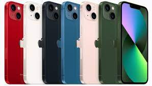

스마트폰은 컴퓨터를 결합한 무선 휴대전화기이다. PC에서 실행되는 운영체제보다 작게 만든 모바일 운영체제를 탑재하여
인터넷 검색, 전자우편, 간단한 문서 편집, 카메라, 오디오 및 비디오 재생 등 PC의 기능을 거의 모두 갖추고 있다.
최초의 스마트폰은 사이먼(Symon)으로 추정된다. IBM사가 1992년에 설계하여 그 해에 미국 네바다 주의 라스베이거스에서 열린
컴댁스에서 컨셉 제품으로 전시 되었다.
안드로이드(영어: Android)는 휴대 전화를 비롯한 휴대용 장치를 위한 운영 체제와 미들웨어, 사용자 인터페이스 그리고
표준 응용 프로그램(웹 브라우저,이메일,클라이언트,단문 메시지 서비스(SMS), 멀티미디어 메시지 서비스(MMS)등)을 포함하고 있는 소프트웨어 스택이자 모바일 운영체제이다.
아이폰(영어 : iphone)은 2007년 1월 9일, 애플이 발표한 휴대 전화 시리즈 이다. 미국 샌프란시스코에서 열린 맥월드 2007에서
애플의 창업자 중 한명인 스티브 잡스가 발표했다.
| 스마트폰샘플 |
|  |
Copyright 2023 by Kang Chang Seon